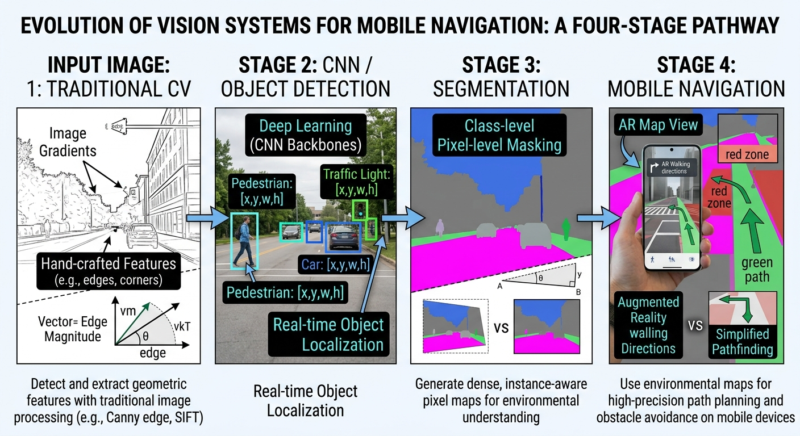
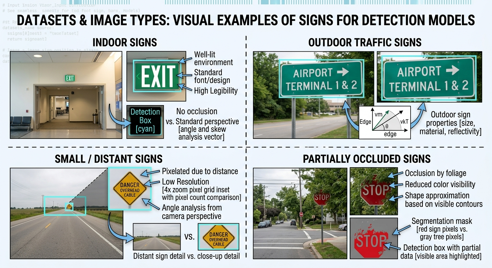
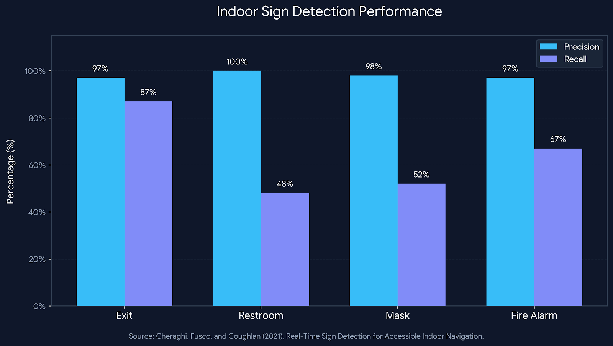

LISTEN TO THIS PAGE
Previous Research on Sign Detection
Listen to an overview of previous research on indoor signs, traffic signs, small signs, occlusion, and accessible navigation.
CS 663 — Computer Vision
Previous Research
How researchers have approached sign detection in indoor and outdoor environments.
What Does Previous Research Show?
Researchers have used many different computer vision approaches to detect signs. Some research focuses on indoor navigation, while other work focuses on traffic signs and difficult outdoor environments.

Looking at several studies helps show how the problem has changed over time. Earlier systems often relied on manually designed image-processing features, while newer systems increasingly use deep-learning-based detection.
The studies below are especially useful because they address different challenges such as small signs, occlusion, camera viewpoint, indoor navigation, and real-world backgrounds.
1. Real-Time Indoor Sign Detection
Cheraghi, Fusco, and Coughlan — 2021
In Real-Time Sign Detection for Accessible Indoor Navigation, the researchers investigated how computer vision could be used to help people who are blind or have low vision navigate indoor environments.
Their system used a YOLO-based object detector to identify indoor signs. The researchers were also interested in the problem of using a smartphone while the user is moving through an environment. [1]
One part of their approach used information from the smartphone's inertial sensors to compensate for camera roll. This is useful because a phone may not always be held perfectly level while a person is walking. [1]
The system also considered the location and orientation of signs so that detected signs could be useful for navigation instead of simply being identified in an image. [1]
Why is this important?
This research connects sign detection to a real mobile accessibility application. The goal is not simply to detect an object but to provide useful information about the user's surrounding environment.
2. Indoor Navigation Using Sign Recognition
Fusco, Cheraghi, and Coughlan — 2020
In An Indoor Navigation App using Computer Vision and Sign Recognition, the researchers developed the iNavigate system for indoor navigation.
The system used U-Net semantic segmentation to identify exit signs. Instead of only producing a bounding box, segmentation creates a mask that identifies the pixels belonging to the detected object. [2]
The system also used Apple's ARKit visual-inertial odometry to track the relative position and orientation of the camera. This information could then be combined with an indoor floorplan and navigation system. [2]
This demonstrates how sign detection can become part of a larger computer vision system. The detected sign can provide information that is combined with the user's estimated position and the building layout.
3. Detecting Small and Occluded Traffic Signs
Liu et al. — 2021
Liu and colleagues developed TSingNet, a system designed for traffic sign detection in difficult real-world conditions. [3]
One of the important problems addressed by this research is that traffic signs can be very small in an image. They can also be partially hidden by other objects.
TSingNet uses scale-aware feature processing to help detect signs of different sizes. The approach also uses contextual information to help the model understand the surrounding image. [3]
Small Signs
Multi-scale processing helps the system handle signs that occupy different amounts of the image.
Context
Information surrounding the sign can provide additional clues for detection.
Occlusion
The system is designed to improve detection when parts of a sign are hidden.
4. Traffic-Sign Detection in the Wild
Zhu et al. — CVPR 2016
Zhu and colleagues studied traffic-sign detection and classification using the Tsinghua-Tencent 100K (TT100K) dataset. The dataset was created from 100,000 Tencent Street View panoramas and contains about 100,000 images with 30,000 traffic-sign instances. The images include different lighting and weather conditions, and the signs are labeled with their class, bounding box, and pixel mask. [4]
This type of dataset is useful because it represents signs in real-world street scenes rather than showing signs against simple or controlled backgrounds. It also includes signs that can occupy only a small part of an image. [4]
Their work used a deep-learning-based detection system designed to handle signs at different scales. The system used multiple feature map resolutions and anchor boxes to detect objects of different sizes.
This research is useful for understanding why scale is important in sign detection. A detector that only works well for large objects can have difficulty when a sign is far away and occupies only a small region of the image.
Connection to Mobile Cameras
The scale problem in traffic-sign detection is also relevant to mobile sign detection. When a person is far from a sign, the sign may become very small in the camera frame.
5. Detecting Signs Under Occlusion
Rehman et al. — 2017
Rehman and colleagues studied traffic-sign detection when signs are partially blocked. [5]
Their D-patches approach uses local image patches to find discriminative parts of a traffic sign. Instead of depending completely on seeing the entire sign, the system can use visible portions of the sign as evidence.
The system combines evidence from different parts of the image to make a detection decision. This is particularly relevant to real-world environments because signs are not always completely visible.
For example, a tree branch, vehicle, person, or another object could block part of a sign while leaving enough of the sign visible for detection.
6. Detection from Different Viewpoints
Hsiao and Hebert — 2012
Hsiao and Hebert investigated object detection when objects are viewed from different viewpoints and may be partially occluded. [6]
Their work is not specifically limited to signs, but it provides useful ideas for understanding one of the main challenges in this tutorial: a camera may observe an object from an unusual angle.
Their approach considers three-dimensional object information and visibility when making detection decisions.
Why does viewpoint matter?
A sign that is easy to recognize from the front may look very different when viewed from the side. A useful detection system therefore needs to handle more than one ideal camera viewpoint.
7. Earlier Indoor Sign and Door Detection
Wang, Yang, and Tian — 2013
Wang and colleagues investigated signage and door detection for blind navigation and wayfinding. [7]
Their approach considered traditional computer vision techniques including edge detection, Hough transforms, color and texture segmentation, and feature-based classifiers. [7]
The research also included text detection and OCR as part of a larger navigation system.
This study is useful for comparing earlier traditional computer vision approaches with newer deep-learning-based methods.
Datasets and Types of Sign Images
The studies use different types of images depending on the problem they are trying to solve. Some researchers use indoor smartphone images, while others use outdoor traffic scenes. These differences are important because the appearance and difficulty of signs can change depending on the environment.

Cheraghi and colleagues used images collected inside the Smith-Kettlewell building with an iPhone to evaluate real-time indoor sign detection. Their dataset included images of signs such as Exit, Restroom, Mask, and Fire Alarm signs. [1]
Other research uses large outdoor traffic-sign datasets. The TT100K dataset contains images from Tencent Street View panoramas and includes signs at different sizes and under different lighting and weather conditions. [4]
TSingNet was evaluated using three challenging traffic-sign datasets: TT100K, STSD, and DFG. These datasets include difficult examples with scale variation, small signs, and occlusion. [3]
These examples show why the dataset matters. A system trained only on clear, large signs may not perform as well when it is used on small, distant, partially blocked, or differently oriented signs.
Research Comparison
| Research | Dataset / Images | Main Problem | Approach | Difficult Condition |
|---|---|---|---|---|
| Cheraghi et al. (2021) | iPhone images collected inside the Smith-Kettlewell building | Indoor sign detection and navigation | YOLO-based detection and sensor information | Moving camera and camera orientation |
| Fusco et al. (2020) | Indoor images of Exit signs | Indoor navigation | U-Net segmentation and visual-inertial tracking | Navigation in indoor environments |
| Liu et al. (2021) | TT100K, STSD, and DFG traffic-sign datasets | Traffic-sign detection | Scale-aware and context-aware features | Small and occluded signs |
| Zhu et al. (2016) | TT100K traffic-sign dataset from Tencent Street View images | Traffic-sign detection and classification | Deep-learning detection with multiple scales | Different sign sizes |
| Rehman et al. (2017) | Traffic-sign images containing partially occluded signs | Traffic-sign detection | D-patches using local discriminative image patches | Partial occlusion |
| Hsiao and Hebert (2012) | Object images viewed from different viewpoints | Object detection under viewpoint changes and occlusion | 3D viewpoint and occlusion reasoning | Different viewpoints |
| Wang et al. (2013) | Indoor images of doors and signage | Indoor signage and door detection | Traditional image processing and classifiers | Indoor environments |
Results and Detection Performance
The performance of a sign detection system can be measured in several ways. Two common measurements are precision and recall. Precision describes how many detected signs were actually correct, while recall describes how many of the signs that were present were successfully detected.
Cheraghi and colleagues evaluated their YOLOv5-based indoor sign detector using 810 images collected inside the Smith-Kettlewell building. The detector achieved a precision of 0.97 and recall of 0.87 for Exit signs. For Restroom signs, precision was 1.00 and recall was 0.48. Mask signs had a precision of 0.98 and recall of 0.52, while Fire Alarm signs had a precision of 0.97 and recall of 0.67. [1]

What Do These Results Show?
The results show that high precision does not necessarily mean that the system finds every sign. For example, the Exit sign detector had high precision and relatively high recall, while the Restroom detector had perfect precision but detected less than half of the visible Restroom signs. This is important for a real-world accessibility system because missing a sign can be just as important as avoiding false detections.
Other studies also report improvements over previous approaches. TSingNet was evaluated on TT100K, STSD, and DFG and reported better detection and recognition performance than the state-of- the-art methods used for comparison in the study. [3]
Zhu and colleagues also reported that their CNN-based approach was effective for detecting and classifying traffic signs in the TT100K dataset, which contains many small signs in realistic street scenes. [4]
What Can We Learn From These Studies?
The research shows that sign detection is not one single problem. Different environments create different challenges.
Indoor Navigation
Indoor systems can combine sign detection with camera tracking, floorplans, and navigation information.
Small Signs
Multi-scale features can help detectors identify signs that occupy only a small part of an image.
Occlusion
Local features and contextual information can help when parts of a sign are blocked.
Viewpoint
A sign may look different depending on the camera's position and viewing angle.
Researcher Perspective
James Coughlan, one of the researchers associated with the indoor sign-detection work discussed above, also described several challenges in a 2026 email response for this tutorial.
He identified small or distant signs, camera movement, motion blur, limited camera field of view, and the large amount of visual information in real environments as important challenges. [8]
He also suggested that future systems could allow a user to request a specific type of sign, such as a restroom or elevator sign, instead of continuously reporting every piece of text or signage detected by the camera. [8]
What Comes Next?
The studies above show several ways researchers have approached sign detection. The next section focuses specifically on the difficult situations that can cause these systems to fail.
Next: Difficult Scenarios →